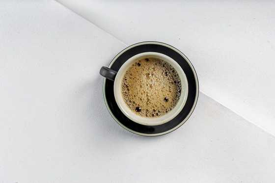

カフェ / 秋田県由利本荘市
笑Cafe
みんなが笑顔になる場所で、ひと息つく一杯を。



お店の想い
「みーんな笑顔になるような場所を作りたい」
お店のInstagramのプロフィールには、「みーんな笑顔になるような場所を作りたい」という言葉があります。屋号の「笑」は、この願いと重なるように感じられます(屋号の由来そのものは確認できていないため、制作側のイメージです)。
お店の名前を「わらCafe」と読むことも、Instagramで確認できました。笑顔がこぼれる、ほっとできる一軒として、このページを組み立てています。


口コミ
こんな声が届くお店に イメージ例
イメージ例
入った瞬間にほっとしました。つい長居してしまいそうです。
イメージ例
笑顔で迎えてもらえて、気持ちまで明るくなりました。
イメージ例
友達とおしゃべりしながら、のんびりできる居心地のよさです。
上記は制作側が作成したイメージ例で、実在のお客様の声ではありません。